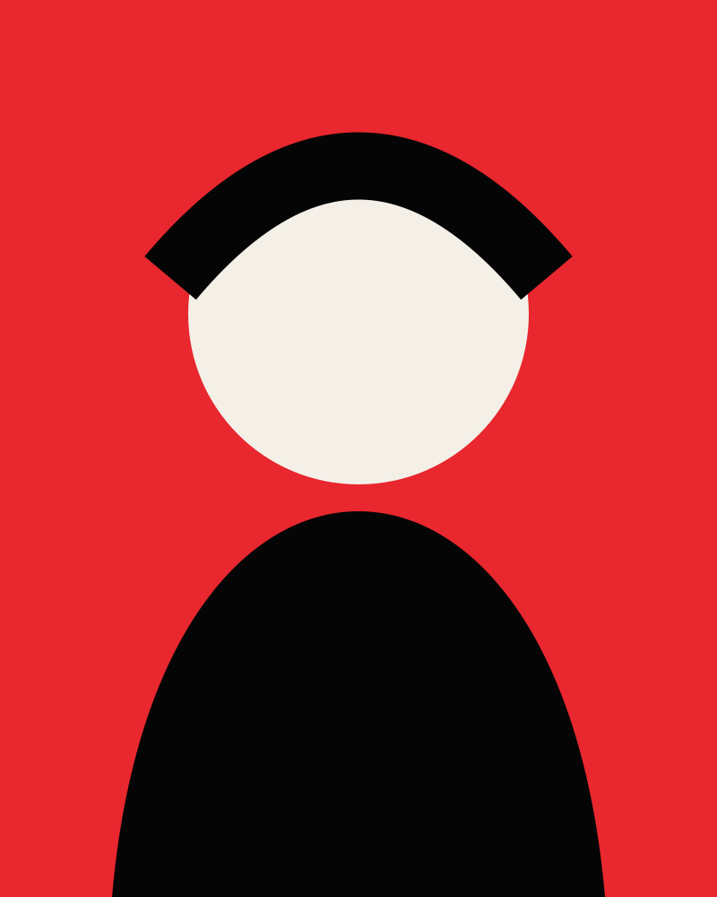

WHO'S
DRIVING?

Hello, I am NOVA//VOID
VISUALS WITH A PULSE.
I build loud moving worlds across screens, stages, and playable spaces. My work lives somewhere between rave flyers, broken game menus, and the moment before a system overloads.
From vertical social cuts to real-time live visuals and complete game trailers, I turn a good bit of chaos into an image people remember.
- Motion design
- Live visual systems
- Game development
- Trailer direction